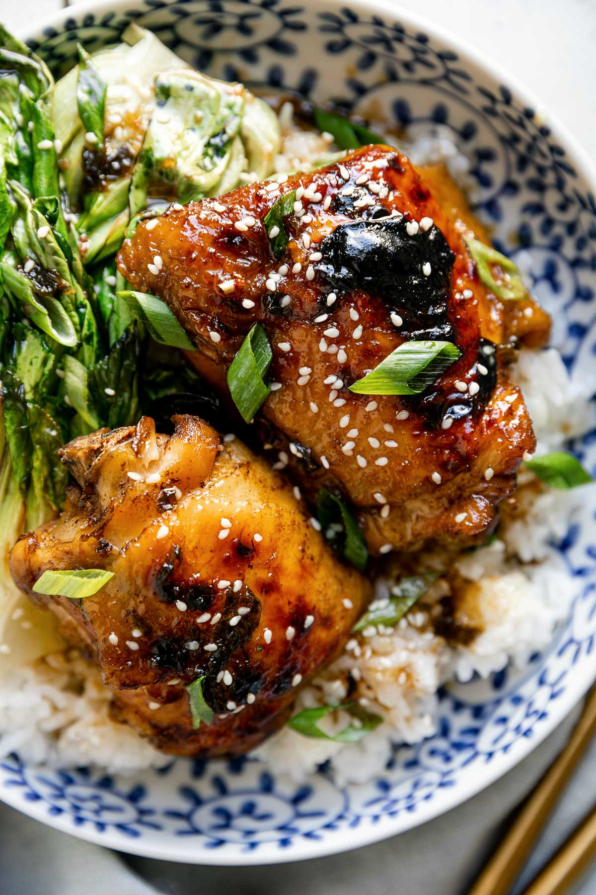

Shoyu Chicken

Description
Savory and sweet chicken thighs slowly simmered in a garlic ginger shoyu sauce. Enjoy over rice and a side of mac salad.
Ingredients
- 6 bone-in chicken thighs w/skin on
- 1 cup water
- 2/3 cup shoyu
- 2/3 cup dark brown sugar
- Green onions
- 5 cloves garlic, minced or grated
- 3-inch piece ginger, grated
- Cornstarch slurry, to thicken sauce
Steps
- Create the braising liquid by mixing the water, shoyu, brown sugar, green onions, garlic & ginger.
- Refrigerate braising liquid up to 48 hours.
- Place chicken in a pot and evenly layered.
- Pour braising liquid into pot and bring to a boil.
- Once boiling, reduce to low. Cover pot and simmer for 30-35 mins.
- Optional: Broil chicken thighs in oven for a crispy and caramelized skin.
- Serve shoyu chicken over rice with a side of mac salad.